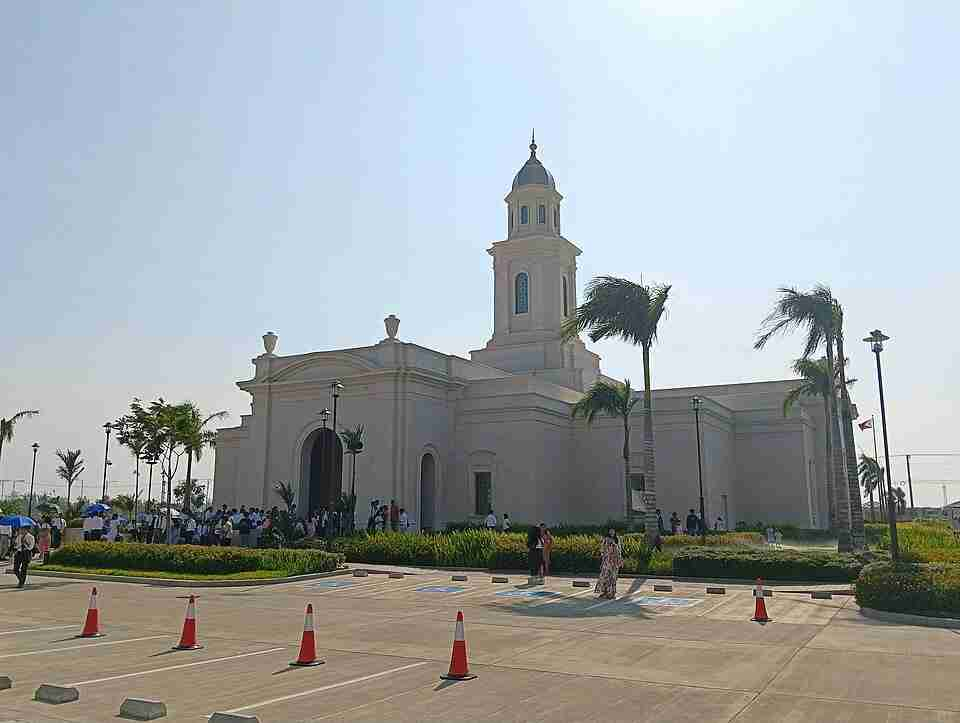
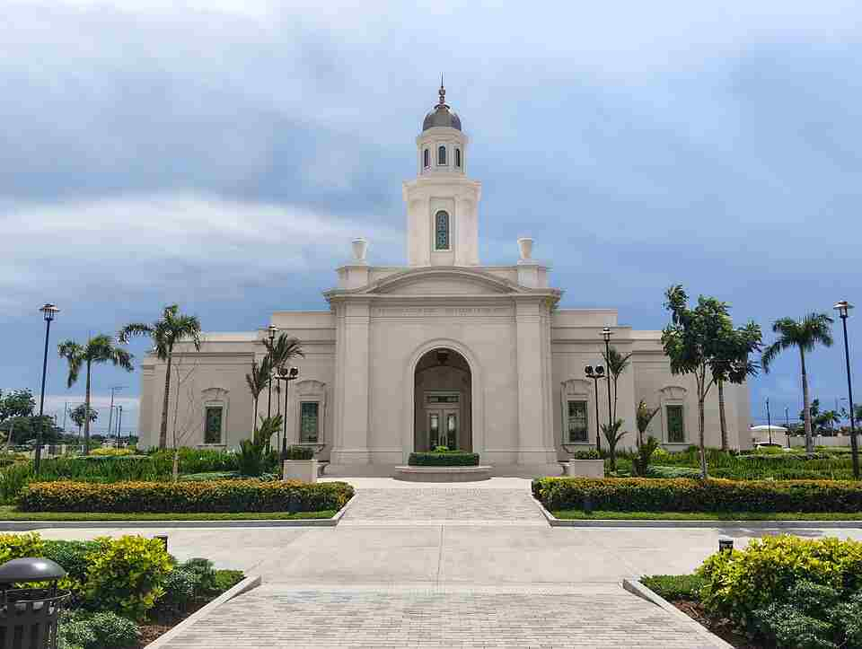
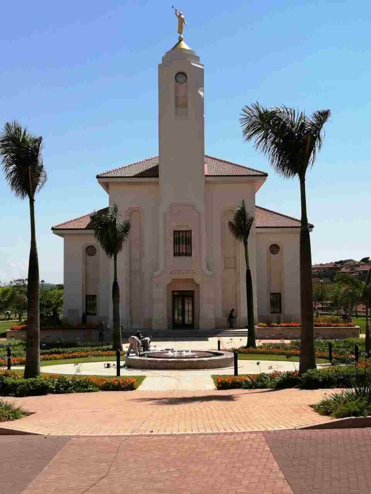
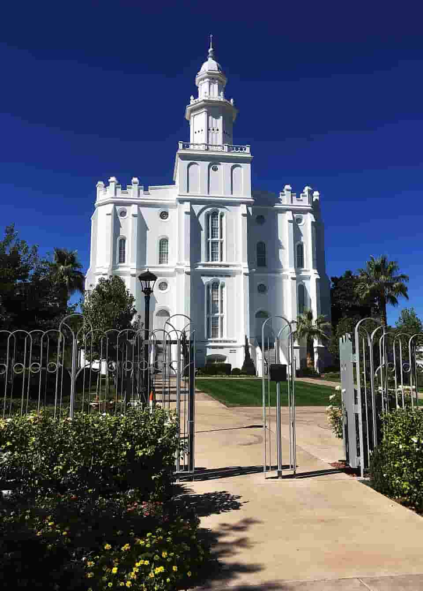
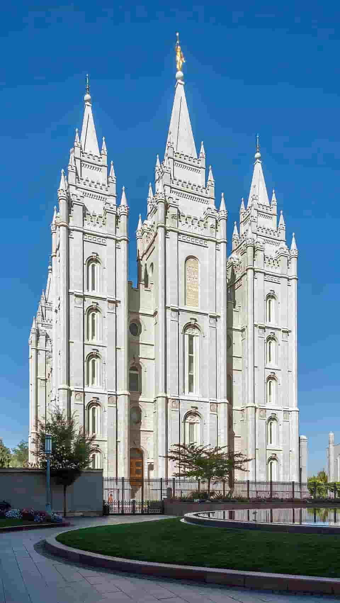
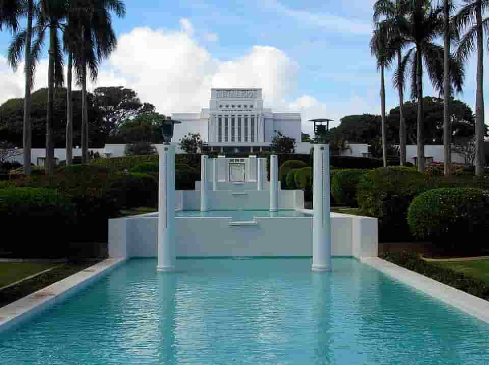
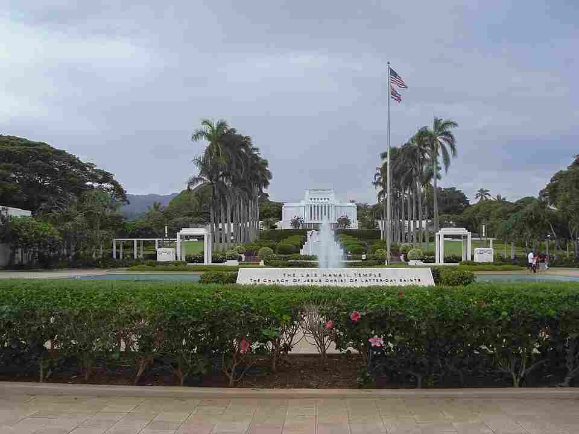
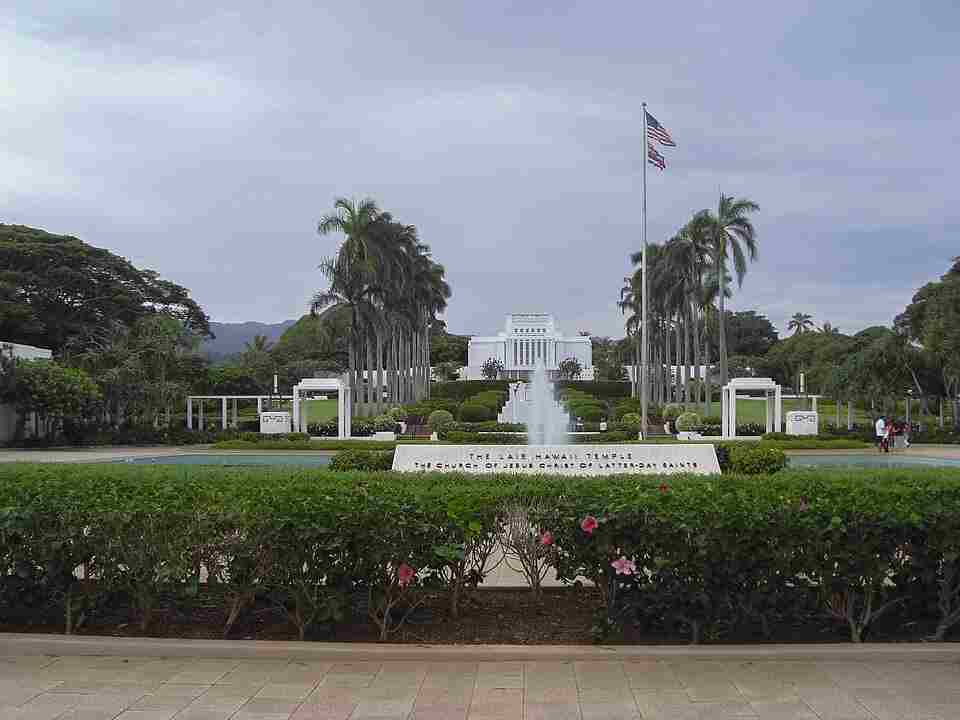

Sacred spaces around the world
Temples
A collection of places built for worship, reflection, and peace.









Sacred spaces around the world
A collection of places built for worship, reflection, and peace.







